สไลด์ต้นฉบับของตอนนี้ (หน้า 2–6)


Slide 3 — Estimating means and covariances
สองบทแรกเริ่มจากโมเดลที่รู้สมการแล้วคำนวณ ACF แต่งานจริงมีแค่ตัวเลขชุดหนึ่ง บทนี้กลับทิศ: เริ่มจากข้อมูล แล้วคำนวณ ACF ตรวจความนิ่ง และกำจัด trend สามเรื่องนี้ "เป็นตัวหลัก ต้องใช้" ตั้งแต่คาบถัดไปซึ่งเป็น application1 ข้อสอบช่วงแรกยังออกตามที่สอน คือมีโมเดลให้หา mean กับ autocovariance2 วิชานี้มีสอบย่อยทุกคาบและไม่มีสอบกลางภาค3 (เฉลยการบ้าน random walk with drift ต้นคาบนี้อยู่ใน Lesson 1 ตอน 5.2)
| ตอน | คำถามที่ตอบ | ใช้ต่อที่ |
|---|---|---|
| 1 | คำนวณ ACF จากข้อมูลอย่างไร | ควิซ, ทุก correlogram ในวิชา |
| 2 | อ่าน correlogram และเส้นขอบอย่างไร | เลือก p, q (L5–7), ตรวจ residual (L8) |
| 3 | ตัดสินความนิ่งด้วยตัวเลขอย่างไร | ADF ใน L7, L11 |
| 4 | กำจัด trend ด้วย regression | decomposition (L4) |
| 5 | กำจัด trend ด้วย differencing | d ของ ARIMA (L6–7) |
รู้สูตรแล้วทำอาหาร กับชิมอาหารแล้วเดาสูตร สองบทแรกทำแบบแรก บทนี้เริ่มทำแบบหลัง โมเดลก็เหมือน f(x) ใน Lesson 1 ซึ่งชีวิตจริงไม่รู้ ต้อง estimate จากข้อมูล4
| ค่าของประชากร | ค่าจากข้อมูล (เติมหมวก = estimator5) |
|---|---|
| \(\mu\), \(\gamma(h)\), \(\rho(h)\): ไม่รู้ค่า และไม่เปลี่ยนตามข้อมูล | \(\bar X\), \(\hat\gamma(h)\), \(\hat\rho(h)\): ประมาณได้ และเปลี่ยนเมื่อเปลี่ยนชุดข้อมูล |
ตัวประมาณทุกตัวใช้ได้เมื่อข้อมูล stationary (Lesson 2): ถ้าค่าเฉลี่ยเท่ากันทุกเวลา ทุกจุดช่วยกันประมาณได้ และทุกคู่ที่ห่างกัน h มี covariance เดียวกัน จึงเฉลี่ยรวมกันได้ \(\bar X=\frac1n\sum X_t\) ง่ายมากและมักใช้แค่ดู6 แต่เป็นขั้นแรกของ \(\hat\gamma\)
สไลด์เรียกว่า การประมาณโครงสร้าง covariance (Shumway หน้า 29) และ การประมาณโครงสร้าง correlation ตัวส่วนมี n เทอมเสมอ ตัวเศษเปลี่ยนตาม lag7
| หารด้วย n | ไม่ใช่ n − 1 แต่ไม่มีผลต่อ \(\hat\rho\) เพราะตัดกันตอนแปลงเป็น correlation8 |
| n − h เทอม | คู่ที่ห่างกัน h มีเท่านั้น lag h คือทุกคู่ที่ห่างกัน h ไม่ได้นับจากวันแรก |
| \(\hat\gamma(-h)=\hat\gamma(h)\) | lag h กับ −h เหมือนกัน (ต่างจาก CCF ใน Lesson 11) |
| \(|h|<n/2\) | h ใหญ่เหลือคู่น้อย ค่าไม่น่าเชื่อถือ และถูกดึงให้เล็กลงราว (n − h)/n เท่า |
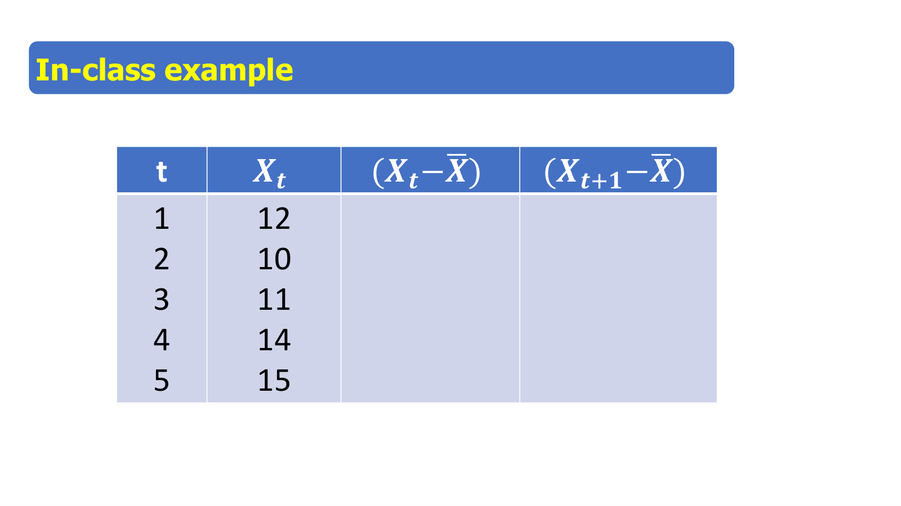
ตัวอย่างในห้องใช้ข้อมูลห้าจุดเพื่อให้คำนวณมือได้ และเป็นเครื่องมือสำคัญในการตรวจความสัมพันธ์ระหว่างจุดเวลา9 \(\hat\rho(h)\) ต้องคำนวณเป็น เพราะเคยออกในควิซแล้ว10 สไลด์เว้นคอลัมน์ \((X_t-\bar X)\) กับ \((X_{t+1}-\bar X)\) ไว้ให้เติม ไม่ต้องเขียนทุกคอลัมน์แบบสมัยก่อน และถ้าเข้าใจแนวคิดก็ไม่ต้องจำสูตร11
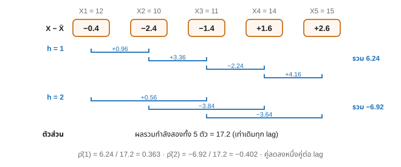
แนวคิดคือจับคู่ส่วนเบี่ยงเบนที่ห่างกัน h แล้วคูณกันบวกกัน เหมือนนับลูกบอลร่วมใน Lesson 1 แต่ใช้ข้อมูลจริงแทนสูตร ทุก lag หารด้วยตัวส่วนเดียวกัน คู่จึงลดลงทีละคู่เมื่อ h เพิ่ม
\(\bar X=62/5=12.4\) ได้ −0.4, −2.4, −1.4, 1.6, 2.6 (ผลรวมต้องเป็น 0 ใช้ตรวจ)
\(0.16+5.76+1.96+2.56+6.76=17.2\)
\(0.96+3.36-2.24+4.16=6.24\) ได้ \(6.24/17.2=0.3628\)
\(0.56-3.84-3.64=-6.92\) ได้ \(-0.4023\)
\((1.6)(-0.4)+(2.6)(-2.4)=-6.88\) ได้ \(-0.4000\) และ \((2.6)(-0.4)=-1.04\) ได้ \(-0.0605\)
\(\hat\rho(1)=0.36\) อ่านเป็นภาษาธุรกิจ: เดือนที่ติดกันไปทางเดียวกัน มีนาคมมาก เมษายนก็มักมาก แต่ไม่แรง14
ในคลิปพูดสลับว่า "ตัวส่วน 6.24 ตัวเศษ 17.2" ที่ถูกคือตัวเศษ 6.24 ตัวส่วน 17.215 และเมื่อ n = 5 เส้นขอบในตอน 2 คือ \(2/\sqrt5=0.894\) ทุกค่าอยู่ในเส้น จึงสรุปไม่ได้ว่าไม่เป็นศูนย์ ตัวอย่างนี้ใช้ฝึกวิธีคำนวณเท่านั้น
Correlogram คือกราฟของ \(\hat\rho(h)\) กับ lag h ไม่ว่าโปรแกรมไหนก็เรียกชื่อนี้16 หรือ autocorrelation plot (ACF) คือกราฟของ sample autocorrelation เทียบกับ h ใช้ในขั้นเลือกโมเดลของ Box-Jenkins
แม้ข้อมูลไม่มีความสัมพันธ์จริง \(\hat\rho\) ก็ไม่เป็น 0 พอดีเพราะความบังเอิญ เส้นขอบบอกว่าความบังเอิญดันค่าออกจาก 0 ได้ไกลแค่ไหนใน 95% ของกรณี (มาจาก ±1.96/√n) แท่งในเส้นถือว่าน้อย ignore ได้ แท่งที่ทะลุเส้นมีนัยสำคัญ17
| n | 5 | 98 (อุณหภูมิ 1900–1997) | 100 | 400 |
|---|---|---|---|---|
| เส้นขอบ | 0.894 | 0.202 | 0.200 | 0.100 |
ดู 20 lag พร้อมกัน คาดว่าราว 1 แท่ง (5% ของ 20) จะเกินหรือแตะเส้นโดยบังเอิญ จึงไม่ควรตื่นเต้นกับแท่งเดียวที่ปริ่มเส้นใน lag ไกล ๆ ให้ดูรูปแบบรวม เส้นเดียวกันนี้กลับมาเป็นเกณฑ์ ACF ของ residual ใน Lesson 8
| รูปของ correlogram | สรุป | เหตุผล |
|---|---|---|
| ตกจาก 1 เป็นราว 0 ทันที | อนุกรมนิ่ง | ค่าที่ห่างกันไม่สัมพันธ์ |
| ค่อย ๆ ลดจาก 1 ไป 0 ช่วงยาว | อนุกรมไม่นิ่ง | มี trend ค่าที่ห่าง 1 หรือ 10 ช่วงยังอยู่ฝั่งเดียวกันของค่าเฉลี่ย ผลคูณจึงบวกต่อเนื่อง |

correlogram ของแผ่นดินไหวจาก Minitab ทะลุเส้นที่ lag 1–3 จึงมีความสัมพันธ์อย่างมีนัยสำคัญ Minitab ไม่แสดง lag 0 และเส้นขอบกว้างขึ้นตาม lag เพราะใช้สูตรที่เผื่อความสัมพันธ์ของ lag ก่อนหน้า ส่วน R ใช้เส้นคงที่ ±2/√n18
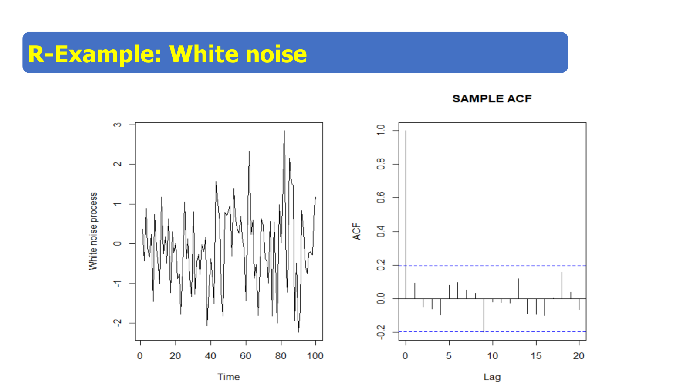
white noise 100 จุด: แท่ง lag 1–20 อยู่ในเส้น ±0.2 ทั้งหมด (lag 9 ปริ่มเส้น ตามที่คาดเมื่อดู 20 lag) เส้นราว 0.2 จริง ๆ คือ \(1.96/\sqrt{100}=0.196\)19 รันในห้องได้ lag 1 = −0.078 ไม่มี lag ไหนทะลุ เพราะ white noise คนละจุดเวลามี covariance เป็น 020 นี่คือหน้าตาของ white noise ในข้อมูลจริง
w <- rnorm(100, 0, 1) # สุ่ม 100 ค่าจาก N(0, 1)
timew <- ts(w)
acf(timew, plot = F) # พิมพ์ ρ̂(h) เป็นตัวเลข
par(mfrow = c(1, 2)) # วาดสองกราฟคู่กัน
plot(timew); acf(timew, main = "SAMPLE ACF")ชีวิตจริงมีแค่ข้อมูล ไม่มีโมเดลให้หา mean function เครื่องมือตรวจความนิ่งจึงเป็น correlogram21 ถ้าไม่นิ่ง (เพราะ trend หรือความแปรปรวนไม่คงที่) จะลงช้ามาก แต่ไม่ได้บอกว่าไม่นิ่งเพราะอะไร22
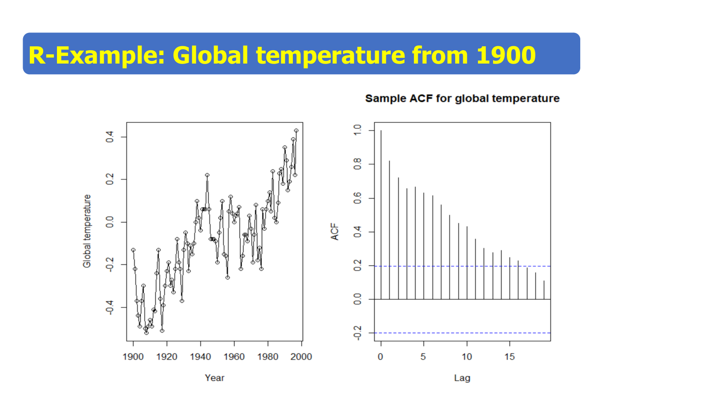
อุณหภูมิโลกปี 1900–1997 มี trend ขาขึ้นชัด และ correlogram ลดลงช้ามาก lag 1 = 0.819 และยังเกินเส้น 0.202 ไปถึง lag 16 รูปแบบนี้บอกว่าไม่นิ่ง กรณีนี้เห็น trend ด้วยตาอยู่แล้ว แต่บางข้อมูลมีความแปรปรวนต่างกันเล็กน้อยที่ตาจับไม่ได้ กราฟนี้จึงมีประโยชน์23
temp <- read.table("temp.txt")
newtemp <- ts(temp, start = 1856)
newtemp.1900 <- window(newtemp, start = 1900) # เหลือปี 1900–1997 จำนวน 98 ปี
par(mfrow = c(1, 2))
plot(newtemp.1900, ylab = "Global temperature", xlab = "Year", type = "o")
acf(newtemp.1900, main = "Sample ACF for global temperature") # เส้นประ ±2/√98 = ±0.202

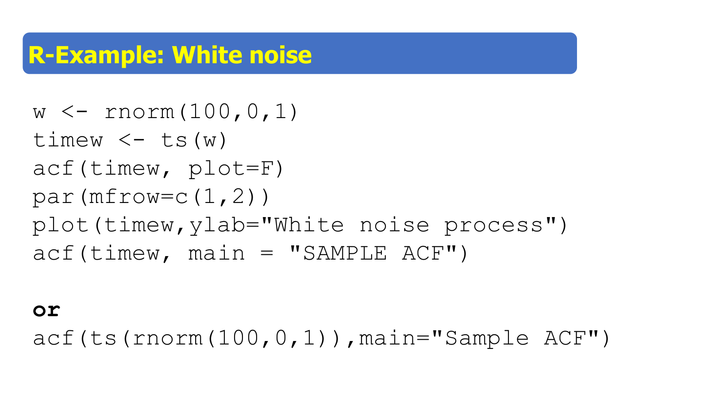
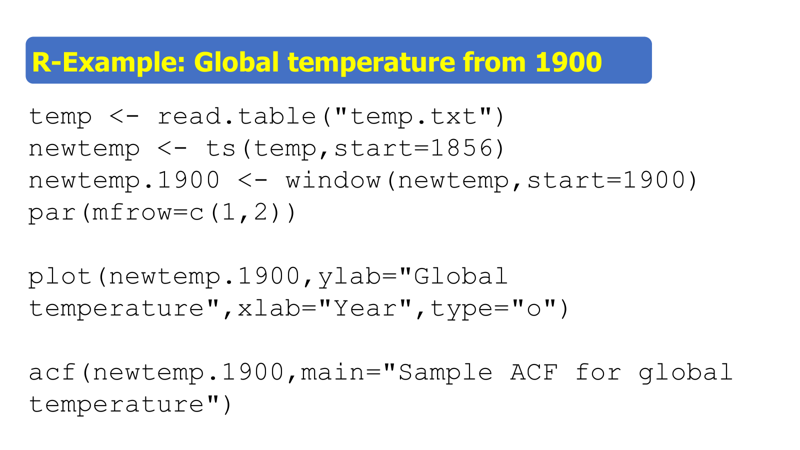
correlogram ใช้สายตาตัดสิน จึงค่อนข้าง subjective24 ADF (Augmented Dickey-Fuller) ให้คำตอบเป็นตัวเลข และเป็นการทดสอบหลักของวิชา อีกตัวที่นิยมในงานปริญญาโทคือ KPSS25 ใน R ใช้ library(tseries) แล้ว adf.test(x) สิ่งที่อยากได้คือปฏิเสธ \(H_0\) เพราะถ้าไม่นิ่งต้องไปปรับข้อมูล26
| p-value | สรุป | ทำอะไรต่อ |
|---|---|---|
| < 0.05 | ปฏิเสธ \(H_0\) → นิ่ง | สร้างโมเดลได้เลย |
| ≥ 0.05 | ไม่ปฏิเสธ → ไม่นิ่ง | กำจัด trend ก่อน (ตอน 4–5) |
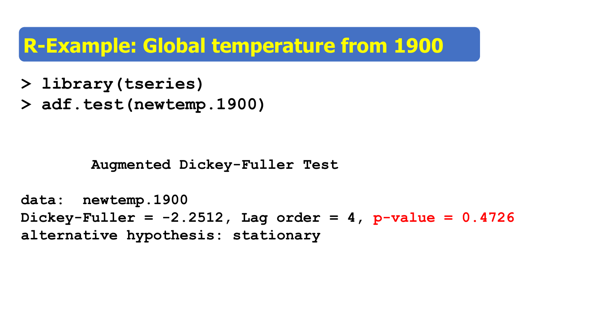
อุณหภูมิตั้งแต่ปี 1900 ได้ Dickey-Fuller = −2.2512 และ p-value = 0.4726 มากกว่า 0.05 จึงไม่นิ่งเพราะมี trend27 ตรงกับ correlogram ใช้กราฟหรือ test อย่างเดียวก็พอ28
| correlogram | ADF | |
|---|---|---|
| ข้อดี | เห็นรูปแบบทั้งหมด บอกได้ว่าควรใช้โมเดลแบบไหนต่อ | ตัวเลขที่ทุกคนได้ตรงกัน |
| ข้อเสีย | ขึ้นกับสายตา | บอกแค่นิ่งหรือไม่ ตรวจเฉพาะ trend แบบ unit root ไม่ตรวจความแปรปรวนที่ไม่คงที่ (ต้องดูกราฟหรือ Box-Cox ใน Lesson 7) |
H0 ของ ADF คือ "ไม่นิ่ง" กลับด้านกับ Ljung-Box และ Shapiro-Wilk ที่ H0 คือสิ่งที่อยากให้เป็น (ตารางรวมใน Lesson 7 ตอน 3.2) Lag order = 4 มาจากค่าเริ่มต้น \(\lfloor(n-1)^{1/3}\rfloor=\lfloor97^{1/3}\rfloor=4\)
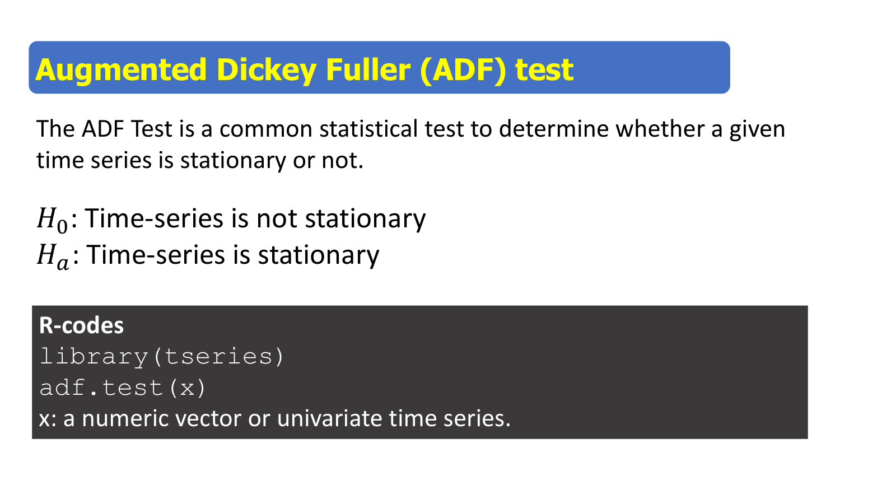
เทียบกับการเอาความลาดของถนนออกจากข้อมูลความสูง detrending วัดความลาดก่อนแล้วลบออก ส่วน differencing ดูแค่ความต่างของก้าวที่ติดกันโดยไม่ต้องรู้ความลาด
อนุกรมไม่นิ่งที่พบบ่อยที่สุดคือมี trend เริ่มจากเส้นตรงก่อน แล้วจึงเป็นเส้นโค้งกำลังสอง29 ข้อมูลที่ขึ้นแบบซิกแซกคือเส้นตรงที่ถูก noise ดึงขึ้นดึงลง30 trend ที่เป็นฟังก์ชันแน่นอนของเวลา เช่น \(\beta_1+\beta_2t\) เรียกว่า deterministic trend ต่างจาก random walk ที่เดินออกไปเพราะผลรวมของ shock (stochastic trend)

Shumway problem 1.6 ให้พิสูจน์ว่าทำไม \(X_t=\beta_1+\beta_2t+w_t\) ไม่นิ่ง เป็นข้อสอบเก่า31 ส่วนที่ 2–3 ของโจทย์ให้แสดงว่า detrending และ differencing ทำให้นิ่ง
\(E(X_t)=\beta_1+\beta_2t\) เพราะ \(\beta_1+\beta_2t\) เป็นแค่ค่า ไม่ใช่ตัวแปรสุ่ม32
\(\gamma(h)=\mathrm{cov}(w_t,w_{t+h})\) เท่ากับ σ² เมื่อ h = 0 และ 0 เมื่อ h ≠ 0 ไม่ขึ้นกับ t ผ่าน33
ถ้าข้อมูลดูนิ่ง ให้คำนวณ sample autocorrelation แล้วใช้เลือกโมเดล แต่ อนุกรมจำนวนมากดูไม่นิ่ง จึงต้องเอา trend ออก ซึ่งทำได้สองวิธี คือ detrending ด้วย regression และ differencing ของ Box-Jenkins35
\(\mu_t\) คือ trend (signal ของ Lesson 1) \(Y_t\) คือส่วนสุ่ม mean 0 ประมาณ \(\hat\mu_t\) ด้วย least squares แล้วทำงานกับ residual ไม่ได้ทิ้ง trend แต่เก็บไว้ก่อน วิเคราะห์ส่วนที่เหลือ แล้วบวกกลับตอนพยากรณ์36 ในภาษา regression residual คือ \(Y-\hat Y\) อนุกรมเวลาแค่เอา residual ไปวิเคราะห์ต่อ37 รูปของ trend อาจเป็นเส้นตรง หรือพหุนามดีกรีสูงกว่า
\(Y_t=(\beta_1+\beta_2t+w_t)-(\beta_1+\beta_2t)=w_t\)
\(E(Y_t)=0\) และ γ เหมือนเดิม38
ตัวอย่างนี้มีไว้ให้เห็นว่า detrending ลดความสัมพันธ์ได้ แต่ residual ยังไม่ใช่ white noise และยังไม่ผ่าน ADF ข้อมูลชุดนี้จึงต้องใช้ differencing
ข้อมูลอุณหภูมิโลกตั้งแต่ปี 1900 มี trend ขาขึ้นชัด จึง fit เส้นตรง \(X_t=\beta_1+\beta_2t+Y_t\) ตัวแปรต้น t เป็นแค่ตัวบอกเวลา ต่างจากวิชา regression ที่สนใจผลเชิงเหตุ วิชานี้ต้องการแค่ intercept กับ slope40
ในฉากของ regression มาตรฐาน error ต้องอิสระต่อกัน แต่อนุกรมเวลามี autocorrelation s.e., t-test และ p-value ที่ R พิมพ์จึงไม่มีความหมาย ยกเว้นเมื่อ residual เป็น white noise เงื่อนไขที่ต้องตรวจคือ ACF ของ residual ต้องเกือบเป็นศูนย์ เส้นตรงยังใช้เป็น trend ได้ สิ่งที่เชื่อไม่ได้คือความแม่นของค่าประมาณ (ปัญหาเดียวกับที่ GLS แก้ใน Lesson 11)
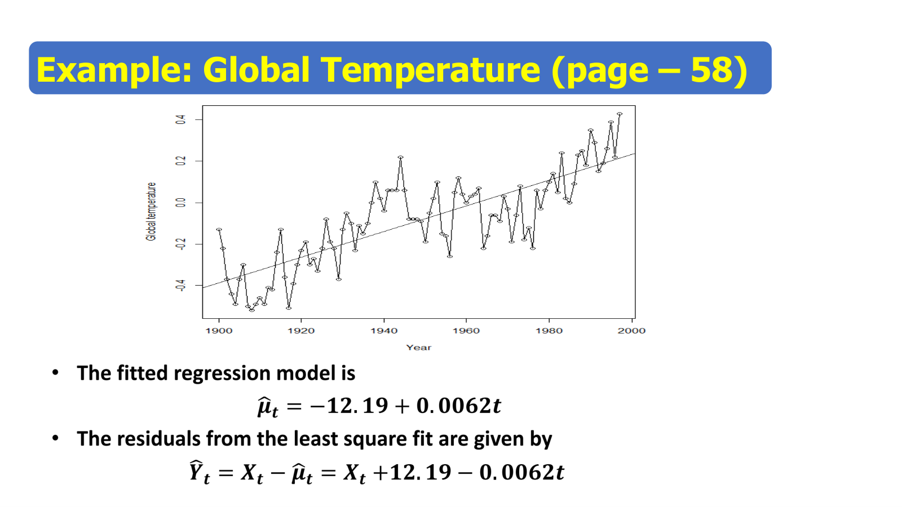
เส้นที่ได้คือ \(\hat\mu_t=-12.19+0.0062t\)41 ความชัน 0.0062 แปลว่าอุณหภูมิเพิ่ม 0.62 องศาต่อ 100 ปี ค่าคงที่ −12.19 คือค่าที่ปี 0 ซึ่งไม่มีความหมายเพราะ t เป็นเลขปีจริง ในกราฟ จุดจริงหลายช่วงอยู่เหนือเส้นติดกันยาว และอยู่ใต้เส้นติดกันยาว ซึ่งเป็นสัญญาณแรกว่า residual ยังมี autocorrelation
temp.1900 <- window(ts(read.table("temp.txt"), start = 1856), start = 1900)
fit <- lm(temp.1900 ~ time(temp.1900)) # หรือ t <- 1900:1997; fit <- lm(temp.1900 ~ t)
summary(fit)
plot(temp.1900, type = "o"); abline(fit)
par(mfrow = c(2, 1)); acf(temp.1900); acf(resid(fit))Coefficients:
Estimate Std. Error t value Pr(>|t|)
(Intercept) -1.219e+01 9.032e-01 -13.49 <2e-16
time(temp.1900) 6.209e-03 4.635e-04 13.40 <2e-16
Residual standard error: 0.1298 on 96 degrees of freedom
time() ให้ปี 1900, 1901, … เป็นตัวแปรต้น42 residual 96 df = 98 − 2 ข้อมูลจึงมี 98 จุด (ในคลิปพูดว่า 97)

residual แกว่งรอบ 0 ตลอด trend หายไปแล้ว แต่อาจยังมีรูปแบบอื่นที่ต้องดูทีหลัง43 ค่าเกาะกลุ่มเป็นช่วงยาว ช่วงหนึ่งติดลบติดกัน อีกช่วงบวกติดกัน จึงไม่ใช่ white noise

ACF ของข้อมูลเดิมลงช้า ส่วนของ residual ดีขึ้น44
| ข้อมูลเดิม | residual หลัง detrend | |
|---|---|---|
| ACF lag 1 | 0.819 | 0.530 |
| เกินเส้น 0.202 ถึง lag | 16 | 6 |
| ADF p-value | 0.4726 | 0.4726 (เท่าเดิมทุกหลัก) |
ADF ของ residual ได้ค่าเท่าข้อมูลเดิม เพราะ adf.test ของ tseries ใส่เส้นตรงตามเวลาไว้ในสมการทดสอบอยู่แล้ว การลบเส้นตรงก่อนจึงไม่เปลี่ยนผล ผลนี้บอกว่ายังมีความไม่นิ่งเหลืออยู่ residual lag 1 = 0.530 นี้คือจุดเริ่มของ Lesson 5 ที่ถามว่าส่วนที่เหลือซึ่งยังสัมพันธ์ข้ามเวลาจะเขียนเป็นโมเดลอย่างไร
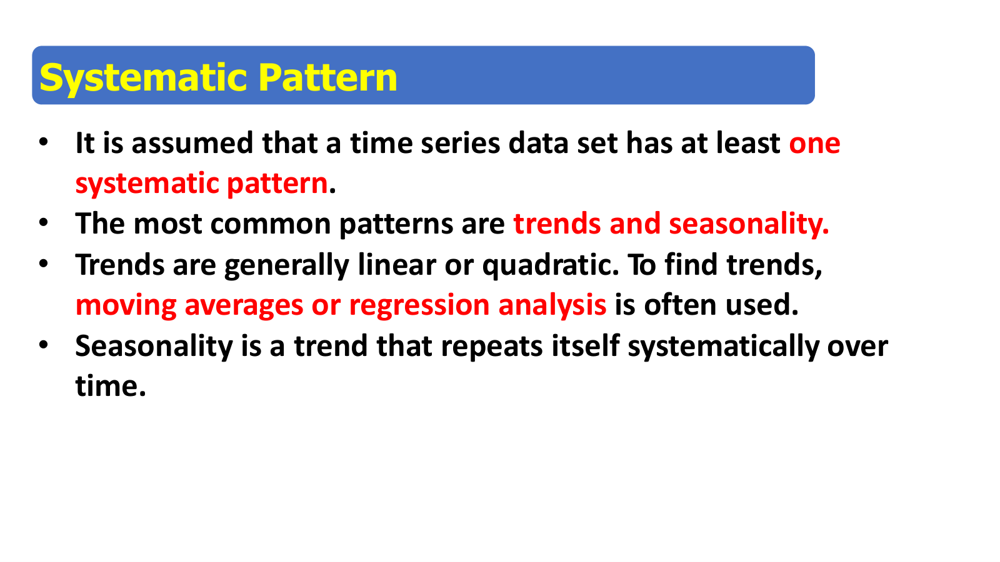


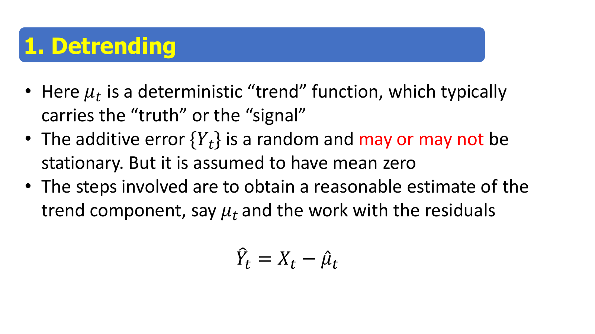
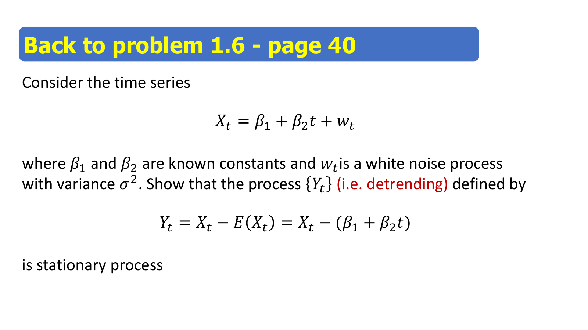


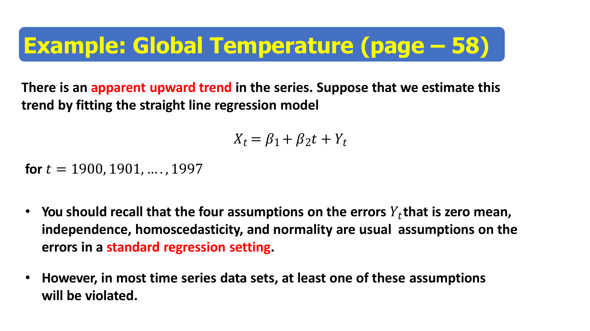

differencing เป็นที่นิยมกว่า ส่วน detrending เข้าใจง่ายกว่าสำหรับคนที่ไม่เคยเรียน และวิชานี้เน้น differencing45 เมื่อ detrending ไม่พอ ให้พิจารณา กระบวนการผลต่างครั้งแรก ∇Xₜ ต่างประเทศใช้ ∇ (nabla) ในไทยมักใช้ Δ ซึ่งหมายถึงสิ่งเดียวกัน46
| detrending | differencing | |
|---|---|---|
| ลบอะไร | เส้น trend ที่เวลาเดียวกัน \(D_t=Y_t-T_t\) | ค่าที่ติดกัน \(Y_t-Y_{t-1}\)47 |
| ต้องประมาณพารามิเตอร์ | β₁, β₂ | ไม่ต้องเลย |
| ได้อะไรออกมา | เส้น trend + residual | ผลต่าง (ไม่ได้ trend ให้ตีความ) |
| จำนวนข้อมูล | เท่าเดิม | ลดครั้งละหนึ่งจุด48 |
| ใน ARIMA | — | จำนวนครั้งที่ diff คือ d |
ข้อมูล 12, 14, 17, 18, 21, 23 ผลต่างคือ 2, 3, 1, 3, 2 (∇X₁ หาไม่ได้เพราะไม่มี X₀) ข้อมูลเดิมเพิ่มต่อเนื่อง แต่ผลต่างแกว่งรอบ 2.2 trend เส้นตรงจึงกลายเป็นค่าคงที่ที่เท่ากับความชัน ใน R ใช้ diff(x)
\(Y_t=(\beta_1+\beta_2t+w_t)-(\beta_1+\beta_2(t-1)+w_{t-1})=\beta_2+w_t-w_{t-1}\)
\(E(Y_t)=\beta_2\) ไม่ขึ้นกับ t และ \(\gamma(0)=2\sigma^2\)
ตรงกันที่ \(w_t\) (+1 กับ −1): \(-\sigma^2\) ส่วน \(|h|\ge2\) เป็น 0
detrending ให้ white noise พอดี แต่ differencing สร้าง ρ(1) = −0.5 ขึ้นมาเอง เพราะผลต่างที่ติดกันใช้ \(w_t\) ร่วมกันด้วยเครื่องหมายตรงข้าม หน้าตานี้คือ MA(1) ที่ θ = −1 ใน Lesson 5 (ขอบล่างสุด |ρ₁| ≤ ½) และเป็นที่มาของคำเตือน overdifferencing ใน Lesson 7 ตอน 3.1: diff เกินจำเป็นแล้ว ACF lag 1 จะเข้าใกล้ −0.5
หลัง differencing สร้างโมเดลกับอนุกรมที่นิ่ง แล้ว แปลงผลกลับเป็นอนุกรมเดิม {Xₜ} เช่น พยากรณ์ผลต่างถัดไปได้ 2 และค่าล่าสุด 23 ค่าพยากรณ์คือ 25 (ใน R ใช้ diffinv หรือใส่ d ในคำสั่ง arima ตาม Lesson 8 ตอน 2.4)
B ไม่ใช่ตัวอักษรธรรมดา แต่เป็น operator ดึง \(X_t\) ออกมาแล้วเขียนผลต่างเป็นพหุนามได้50 B คือสัญลักษณ์หลักของ ARIMA ใน Lesson 5–7
ตรวจกับข้อมูลข้างบนที่ t = 4: \(\nabla^2X_4=\nabla X_4-\nabla X_3=1-3=-2\) และ \(18-2(17)+14=-2\) ตรงกัน
ทั้งสองวิธีแปลงอนุกรมให้นิ่ง (หรืออย่างน้อยดูนิ่ง) และ แม้จะ difference ได้มากกว่าหนึ่งครั้ง แต่ครั้งเดียวมักพอ ข้อมูลที่ความแปรปรวนไม่คงที่ต้อง log ก่อน (Lesson 7) และ seasonal differencing เช่น \(X_t-X_{t-12}\) อยู่ใน Lesson 9
| อุณหภูมิ 1900–1997 | ข้อมูลเดิม | detrend | difference |
|---|---|---|---|
| ACF | ลงช้า | ดีขึ้น แต่ lag 1 = 0.53 | ไม่ลงช้าแล้ว มีแบบแผนที่ดีขึ้น51 |
| ADF p-value | 0.4726 | 0.4726 | ≤ 0.01 → นิ่ง |
ค่าเฉลี่ยของผลต่าง 0.0058 องศาต่อปี ใกล้กับความชัน 0.0062 ของเส้นตรง ตรงกับที่ differencing เปลี่ยน trend เส้นตรงเป็นค่าคงที่ (ค่าคงที่นี้คือ drift/intercept ที่เห็นใน output ของ Lesson 8 ตอน 2.2) differencing จึงเป็นวิธีหลักของวิชา และจำนวนครั้งที่ diff คือ d ใน ARIMA(p, d, q)
diff1 <- diff(temp.1900)
plot(diff1, ylab = "Global temperature first differences")
acf(diff1)
library(tseries); adf.test(diff1)length(diff1) = 97 mean(diff1) = 0.0058 ACF lag 1–4: -0.196 -0.191 -0.195 0.162 (เส้นขอบ ±2/√97 = ±0.203) Dickey-Fuller = -6.8589, Lag order = 4, p-value = 0.01 (p-value smaller than printed)

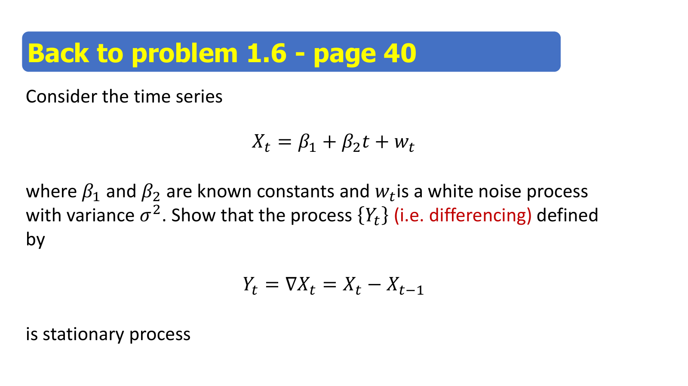


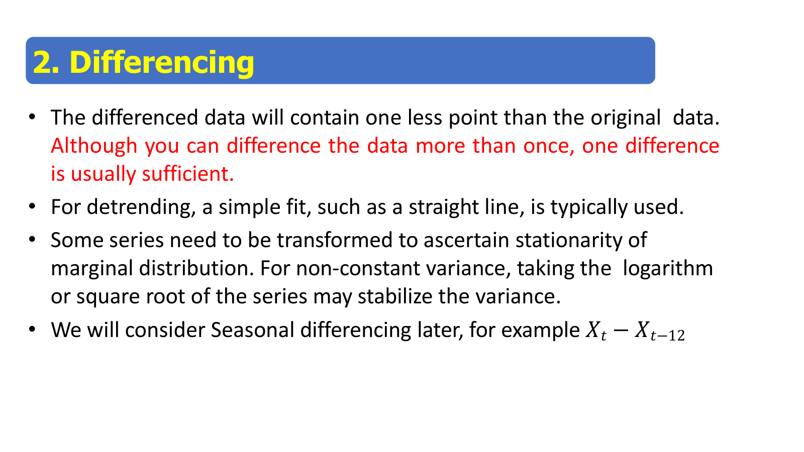
หน้าแบบฝึกมีเฉลย Exercise 1 ข้อ 5–8 ที่รันกับข้อมูลจริง และข้อสอบปลายภาคปีก่อน ๆ ที่ออกจากบทนี้พร้อมแม่แบบคำตอบ ลองฝึกต่อในแบบฝึก Lesson 3 หรืออ่านต่อ Lesson 4 — Smoothing methods และ decomposition
ตัวเลขยกในเนื้อหาชี้มาที่รายการนี้ แต่ละรายการระบุคลาสและนาทีของคลิป พร้อมถ้อยคำในคลิปเมื่อมี
| หน้า | เนื้อหา | อยู่ในตอน |
|---|---|---|
| 1 | ปก Estimating means and covariances | etc — ปก |
| 2–6 | Estimation from data, population, ตัวประมาณ | ตอน 1 |
| 7–9 | Correlogram, large sample distribution | ตอน 2 |
| 10 | In-class example | ตอน 1 |
| 11–14 | R-Example white noise และ global temperature | ตอน 2 |
| 15–16 | ADF test | ตอน 3 |
| 17 | หน้าคั่น Dealing with Deterministic Trend | etc — หน้าคั่น |
| 18–31 | Systematic pattern, problem 1.6, EDA, detrending, global temperature | ตอน 4 |
| 32–37 | Differencing, backshift operator | ตอน 5 |
แหล่งอื่นที่ใช้: Class 3 ช่วง 0:21–1:54 (ช่วง 0:00–0:21 เฉลย random walk อยู่ใน Lesson 1), Class 6 ที่ 1:14 (ρ̂ ต้องคำนวณเป็น) และ 1:46 (quadratic trend), Exercise 1 ข้อ 5–8, ไฟล์ R_codes, earthquake.txt, ventilation.txt (CLASS 3), temp.txt (CLASS 2) และ TSA::prescrip